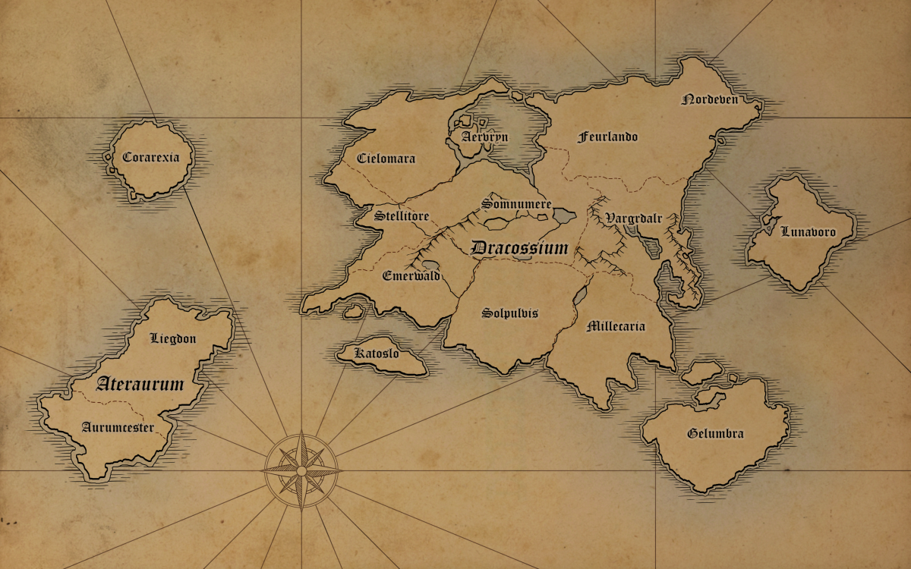

世界觀
莫普雷納世界的人口組成包含種類多元的高等智慧生命，在通用語被發明的數千年內發展出蓬勃的文明。已有文字紀載的地區，主要分為：龍骨大陸(Dracossium)、黯金大陸(Ateraurum)、霜影大陸(Gelumbra)、月噬島(Lunavoro)以及未開發的鴉神島(Corarexia)。不同地區有獨立的方言、紀年方式與記數系統，日夜的流逝速度和地球相同。遊戲中為了方便描述，在提及年代時使用龍骨大陸地區的大陸紀元，記數系統和度量衡單位則轉換成地球的公制單位。
地區介紹
(世界地圖仍然在繪製階段，完整版的地名會標上中文。)

龍骨大陸 Dracossium
空之丘: 艾爾弗恩 Aervryn
霧海: 席洛瑪拉 Cielomara
星之灣: 西太利托 Stellitore
沉睡之湖: 桑努米爾 Somnumere
無盡翠林: 埃梅瓦德 Emerwald
春島: 卡特斯洛 Katoslo
太陽王朝: 蘇洛普維斯 Solpulvis
邊境之眼: 諾德凡 Nordeven
試煉平原: 翡奧蘭 Feurlando
巨狼谷: 法格岱爾 Vargrdalr
沙之迷宮: 密卡里亞 Millecaria
黯金大陸 Ateraurum
煉獄城: 烈格敦 Liegdon
黯金之鄉: 奧侖切斯特 Aurumcester
霜影大陸 Gelumbra
寒霜帝國: 蓋侖伯勒 Gelumbra
月噬島 Lunavoro
魔法首府: 盧那弗羅 Lunavoro
鴉神島 Corarexia
幻獸之邦: 科拉雷西亞 Corarexia